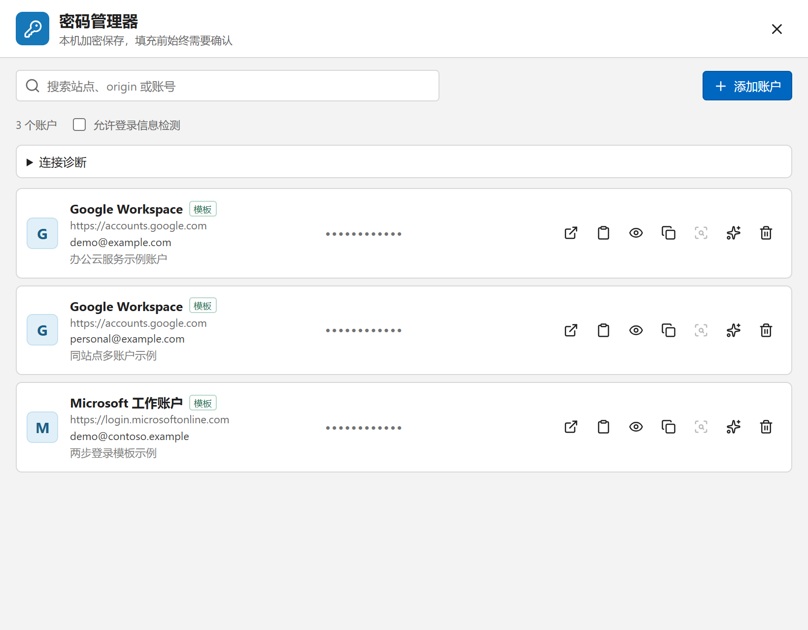
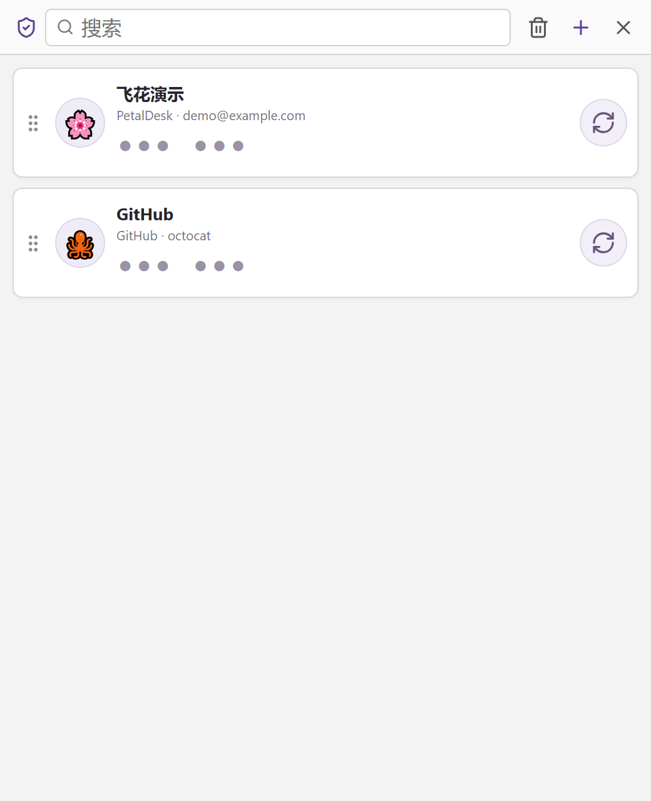

Markdown 便签
Typora 风格即时排版，也有纯文本模式；颜色、置顶、只读逐张独立。
v0.7.0 现已发布 · Windows 10/11 与 macOS 12+
飞花 - PetalDesk 是本地便签与效率工具：Markdown 便签、密码管理器、MFA 验证器、截图与甘特图。无账号、无云端依赖，装好即用。

便签之外，飞花把常用的桌面小事也一并照顾到——各自独立开窗，需要时出现，完成后退到一旁。
Typora 风格即时排版，也有纯文本模式；颜色、置顶、只读逐张独立。
独立加密保险库保存站点账户，Firefox 扩展确认后才填充，绝不自动提交。
标准 TOTP，扫码、图片、链接或批量导入；本机保护，免密解锁。
F1 全局唤起，标注、马赛克、置顶贴图；长页面滚动拼接。
排序、进度筛选、时间条拖动，从小时细节看到月度安排。
透明电子管数字计时，一次或日周月年周期提醒，系统通知送达。

输入即排版，不用在编辑和预览之间来回切换。每张便签都是独立窗口，颜色、位置、状态各记各的。

站点账户保存在独立的 XChaCha20-Poly1305 加密保险库，日常用 Windows DPAPI 解锁，与 MFA 验证器共享同一个恢复密码。配套 Firefox 扩展把保险库带进浏览器：

标准 TOTP，与主流验证器互相通用。从添加、查看到导出，都在一个安静的小窗口里完成。

全局唤起、框选、标注、马赛克、模糊，然后复制、保存或置顶贴图。长截图（Windows）默认手动滚动：框选固定区域，回到窗口滚动，点完成即实时拼接，可暂停、重试、回退；自动滚动是高级模式。
安装扩展后不需要对它做任何操作，飞花里的长截图操作完全不变。当截图目标是 Chrome、Edge 或 Firefox 长页面并使用自动滚动模式时，飞花会自动启用“浏览器增强”引擎，滚动定位与拼接更稳定。扩展本身没有、也不需要任何长截图操作入口。

没有账号，也没有云端依赖。便签、设置与小工具数据统一放进“文档”下的 PetalDesk 数据目录，规则简单透明。
每张便签一个文件夹：正文是标准 Markdown，图片存在 assets/，不依赖专有数据库也能读。
先写临时文件再原子替换，写到一半断电也不会留下半个文件。
多窗口或同步盘造成冲突时写入 conflicts/，双方都保留，由你定夺。
自动保留最近 5 份备份；删除的便签与 MFA 项先进回收站，可以恢复。
复制整个 PetalDesk 目录就能搬走全部数据；坚果云、OneDrive 只是可选的搬运工。
MFA 与密码保险库使用随机密钥 XChaCha20-Poly1305 加密、Argon2id 恢复密码包装，Windows DPAPI / macOS Keychain 本机保护；换设备输入一次恢复密码即可重新绑定。
PetalDesk/ └─ .petaldesk/ ├─ notes/ │ └─ <note-id>/ │ ├─ note.md ← 唯一真相 │ ├─ meta.json │ └─ assets/ ├─ tools/ │ ├─ gantt/ │ ├─ mfa/ ← XChaCha20-Poly1305 保险库 │ └─ passwords/ ← 独立加密保险库 ├─ state/ ├─ backups/ ← 最近 5 份 ├─ trash/ └─ conflicts/ ← 冲突副本，不静默覆盖
数据目录默认位于系统“文档”下的 PetalDesk，可在设置中自定义位置；坚果云、OneDrive 等同步盘只是可选搬运，飞花不依赖任何云服务。
核心体验在两个平台一致；少数能力依赖 Windows 平台接口，macOS 后续逐步补齐。
| 功能 | Windows 10/11 | macOS 12+ |
|---|---|---|
| Markdown 便签 | ✓ 支持 | ✓ 支持 |
| 任务甘特图 · 计时器 · 提醒 | ✓ 支持 | ✓ 支持 |
| 截图（标注 · 马赛克 · 贴图） | ✓ 支持 | ✓ 支持首次使用需授予“屏幕录制”权限 |
| MFA 验证器 | ✓ 支持DPAPI 本机保护 | ✓ 支持Keychain 本机保护 |
| 密码管理器 | ✓ 支持含 Firefox 扩展填充 | — 暂不提供 |
| 长截图 | ✓ 支持手动滚动 + 自动滚动高级模式 | — 暂不提供 |
| 浏览器联动（Firefox 扩展） | ✓ 支持长截图增强 + 密码填充 | — 暂不提供 |
升级：Windows 0.5.2 及以上可在应用内自动更新到 0.7.0；macOS 下载新版 DMG 覆盖安装即可。
当前版本 0.7.0。装好即用，不需要账号。
macOS 截图首次使用需授予“屏幕录制”权限；Windows 安装器为联网安装包，会自动检查 WebView2 运行库。